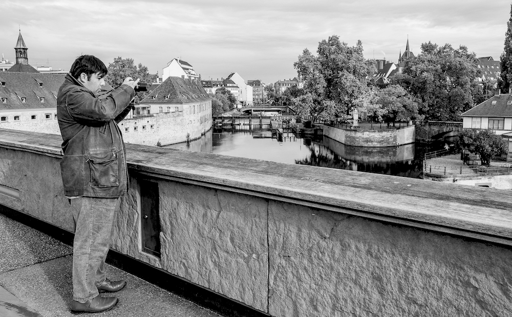

Karim: le choix d'une vie "ordinaire".

Karim a 33 ans bientôt. Il est autiste, déficient mental, il ne sait ni lire, ni écrire, ni compter.... Il vit à Strassbourg avec sa mère, Rita. Sa passion est la photographie et il a eu déjà plusieurs expositions personelles. Il y a dix ans, il était en groupe occupationnel pour adulte, en externat et cela s’est très mal passé.
« Là-bas, il n’y a que des handicapés ».
Depuis le CP Karim a été en hôpital de jour, en IME puis IMPro... Jusqu’à ses 23 ans, à part sa déficience mentale, il n’y a
jamais eu de mots mis sur sa différence. Ce n’est qu’à 23 ans qu’il a été diagnostiqué autiste, bien que cela faisait plusieurs
années que je le présentais, moi, sa mère, alors qu’il y a 20 et même 15 ans, l’autisme n’était pas encore aussi connu que
maintenant.
Déjà, pendant ses dernières années d’internat à l’Impro, il supportait de moins en moins bien l’institution.... Son leitmotiv
principal était de rentrer ou de rester à la maison et pour cela toutes les stratégies étaient bonnes....
Sa dernière année en Impro, il a beaucoup tenu par la promesse de « passer chez les adultes » mais quand il a intégré le
groupe occupationnel pour adulte, malgré sa déficience, il a très vite perçu qu’en fait, il y avait peu de différence avec
sa position en groupe adolescent, et je pense qu’il a eu la vision des 40 ans d’occupationnel qu’on lui assurait, hors de
la vie, hors de tout...
C’est d’ailleurs la première réponse qu’il m’a donnée quand j’ai essayé de comprendre ce qui le rendait si violent à l’idée
de retourner au centre : « Là-bas, il n’y a que des handicapés ».
Au fil des semaines, Karim devenait de plus en plus violent, de plus en plus ingérable au point où la seule solution proposée
par l’équipe médico-sociale du centre était la médicamentation. Certes, la violence était devenue extrême, mais n’était-elle
pas avant tout l’expression d’un mal-être, d’un malaise et le résultat d’une incapacité à les dire. La violence comme langage,
comme vecteur de communication.
J’ai alors décidé d’écouter Karim et en tant que mère, mais aussi tutrice, de prendre la décision de permettre à Karim
de vivre la vie qu’il souhaitait : à la maison.
Vivre au jour le jour.
Finalement, sa présence en institution était pratique. Il partait chaque matin, et à part les deux trois heures nécessaires à
le convaincre de prendre le train pour se rentre au centre, le reste de la journée se passait assez sereinement, tant pour lui
que pour moi.
Rester à la maison est d’une toute autre nature, d’autant que j’ai un travail prenant de créatrice avec une entreprise à faire
tourner. C’est à la fois pour moi vital financièrement, mais aussi vital pour mon équilibre, que je trouve essentiel car si je
flanche, tout s’écroule. L’appartement est juste au-desus de l’entreprise, ce qui permet à Karim de faire des aller-retours
fréquents entre la maison et l’atelier, de sentir ma présence quand il la cherche sans être omniprésente dans le même espace
vital.
Et là, plus question de se plaindre de mauvaises prises en charges ou de pises en charge inadaptée. Vous êtes responsable
des conséquences positives ou négatives des décisions que vous prenez.
Pour moi, malgré sa déficience, il était évident que Karim pouvait continuer à progresser pour peu que je lui en offre les
conditions.... Chacun de nous, s’il regarde en arrière peut constater qu’il n’est plus la même personne qu’il y a 5, 10 ou 20
ans... La vie, les expériences, les personnes rencontrées contribuent à la personne que nous devenons chaque jour. Or,
lorsque vous êtes enfermé dans une institution avec uniquement des pairs présentant un handicap proche ou différent du vôtre
et des intervenants dont c’est le travail de s’occuper de vous, quelle place aux expériences, aux rencontres, aux possibilités
d’évolution.
Pendant ces dix dernières années, nous avons eu, Karim et moi, très peu de relations avec les institutions si ce n’est les
renouvellements de tutelle ou de taux d’incapacité induisant le versement de l’AAH.
Que dire de ces dix ans ? que cela n’a pas été rose tous les jours... qu’il y a eu de belles avancées, mais aussi des moments
de doute, d’abattement, de fatigue... Qu’il ne s’agit pas seulement de cumuler des occupations, mais aussi de construire une
vie, des relations, des souvenirs...
S’apercevoir que Karim n’a pas forcément envie de ce que je lui propose mais qu’aussi pourquoi, du fait du handicap exiger
d’une personne qu’elle adhère à votre mode de fonctionnement, à vos goûts, à vos désirs alors que, finalement, ni son frère,
ni sa sœur ne le font... Bien sûr, cela rend tout plus difficile au quotidien. Lui permettre d’accéder à une part de ses rêves
tout en essayant de conserver la mienne qui me permet de ne pas m’user complètement dans l’accompagnement, malgré les
moments de crise plus ou moins violents.
Vivre au jour le jour. Déployer des stratégies de vie, d’activité.... Echafauder des plans, des projets sur 2, 5 ou 10 ans....
Se projeter dans un avenir incertain.
Les sujets et des objets.
L’impression d’un monde à deux vitesses.... Le temps des actifs, celui des gens qui n’ont pas le temps, qui courent après leur vie,
leur travail, leurs loisirs, qui jonglent dans un contre la montre effréné...
Celui des autres, des sans-emplois, du troisième âge, du handicap.... De ceux qui finalement deviennent la matière première des
premiers à travers tout le secteur économique du handicap et de l’aide à la personne, de l’aide à la formation, plus objets
que sujets.... Avec peu de chances de changer de statut malgré les efforts théoriques des premiers.
Et avec cela, l’isolement, la perte de repères, le renoncement à une part de ses rêves...
En France, il y a 9 millions d’aidants familiaux dont 5 millions à temps complet.
Cela veut aussi dire qu’il y a 9 millions d’aidés.
18 millions d’aidés et d’aidants sur 65 millions d’habitants ! que serait la prise en charge du handicap, de la maladie, du
vieillissement sans eux ?
« Sachant que seul est libre qui use de sa liberté et que la force de la communauté se mesure au bien-être du plus faible
de ses membres »
Du préambule de la Constitution Suisse de 1999.
Rita Tatai, 7 Avril 2010